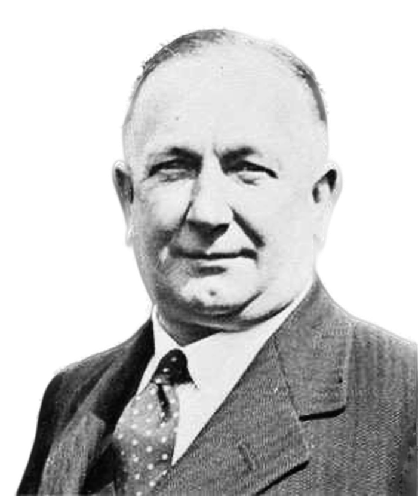
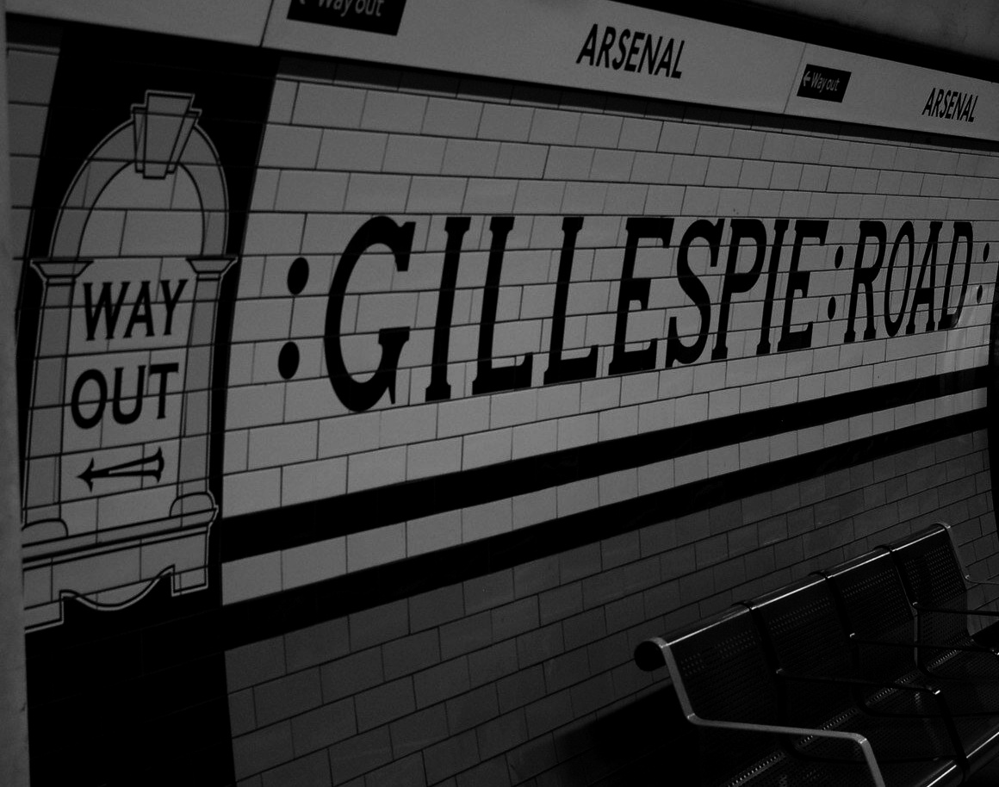
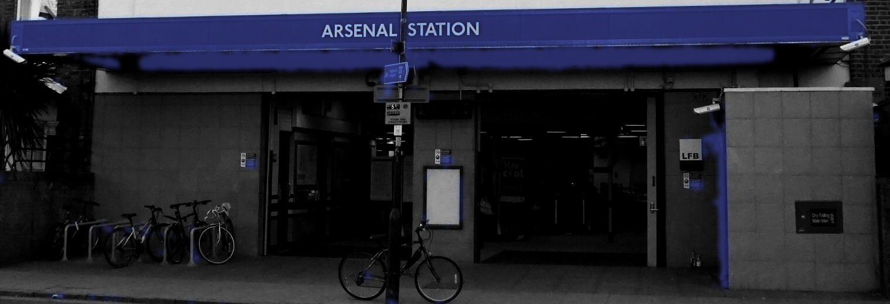

HERBERT CHAPMAN
ENTRENADOR DEL ARSENAL, 1925-1934 · FOTO: AUTOR DESCONOCIDO, D. P.
AZULEJOS DEL ANDÉN (2005) · FOTO: QWGHLM, CC BY-SA 3.0
CHAPMAN, SEGÚN ARSENAL.COM
?
CARTAS Y CALENDARIO: RECREACIÓN
31·10·1906
BILLETE, MAPA Y CARTEL: RECREACIÓN

ANDÉN DE ARSENAL, 2017 · FOTO: CHRISTOPHER HILTON, CC BY-SA 2.0
LA ENTRADA HOY · FOTO: SUNIL060902, CC BY-SA 3.0
CAMPO
FOTOS: RETRATO DE H. CHAPMAN (DOMINIO PÚBLICO) · QWGHLM (CC BY-SA 3.0) ·
CHRISTOPHER HILTON (CC BY-SA 2.0) · SUNIL060902 (CC BY-SA 3.0), VÍA WIKIMEDIA COMMONS
PLANO, CARTAS, BILLETE, MAPA Y CARTEL: RECREACIÓN